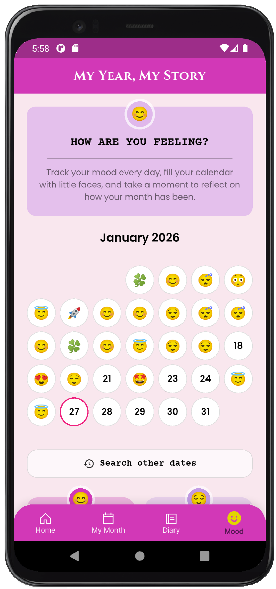

Different projects.
Same purpose.
Projetos diferentes.
Mesmo propósito.
Whether designing a brand, building a product, creating an illustration, or developing an AI-assisted experience, every project explores the same idea: helping people move from uncertainty to clarity.
Seja desenhando uma marca, construindo um produto, criando uma ilustração ou desenvolvendo uma experiência guiada por IA, cada projeto explora a mesma ideia: ajudar as pessoas a passarem da incerteza para a clareza.
The Brand Box
Turning branding from an overwhelming process into a guided creative experience.
Transformando o branding de um processo esmagador em uma experiência criativa guiada.
Explore the Case Explorar o Caso
Sonho de Papel
Where years of listening to entrepreneurs became a design methodology.
Onde anos ouvindo empreendedores se tornaram uma metodologia de design.
Explore the Case Explorar o CasoMy Year My Story
Helping people build a more intentional relationship with their memories, emotions, and personal growth.
Ajudando as pessoas a construírem uma relação mais intencional com suas memórias, emoções e crescimento pessoal.
Explore the Case Explorar o Caso

Leve ao Mar
Creating spaces where art becomes part of everyday life.
Criando espaços onde a arte se torna parte da vida cotidiana.
Explore the Case Explorar o CasoPlaces
A quiet space disguised as a coloring book.
Um espaço tranquilo disfarçado de livro de colorir.
Explore the Case Explorar o Caso